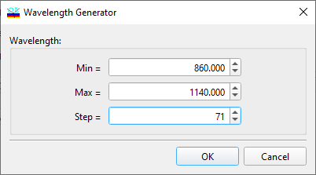

Table from Composition
Table from Composition
Navigation: OptiLayer Menu Commands > Data Menu > Substrate and Layer Material >
Table from Composition
` <table_from_formula.html>`__ ` <idh_edit_layer_material.html>`__ ` <table_from_rt.html>`__

For converting from a Composition to a table presentation, it’s necessary to determine the wavelength region of interest and indicate the required number of spectral points. The conversion is carried out upon pressing the OK button.